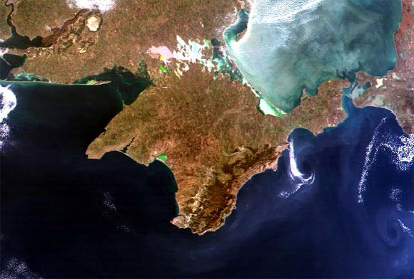

Крым – это живописный полуостров, находящийся в северной части Черного моря. Крымский полуостров имеет прекрасную природу и богатую историю. Сюда приезжают десятки тысячи туристов, чтобы отдохнуть на морском побережье, полюбоваться красивыми пейзажами и окунуться в историю этого дивного места. Меня очень впечатлил Крымский полуостров, его история и его достопримечательности, о которых я немного расскажу.
